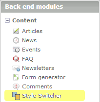
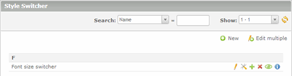

Style switcher settings
Once installed, ZAD Style Switcher extension will be visible in the back end modules.

Clicking on the module, it will open the the style switcher manager.

The buttons on this page perform the typical functions of the Contao back end modules:
 Add a new style switcher.
Add a new style switcher. Edit multiple style switchers at once.
Edit multiple style switchers at once. Edit a style switcher.
Edit a style switcher. Change settings of a style switcher.
Change settings of a style switcher. Copy a style switcher.
Copy a style switcher. Delete a style switcher.
Delete a style switcher. Enable or disable a style switcher.
Enable or disable a style switcher. Show details of a style switcher.
Show details of a style switcher.
Now, create a new style switcher pushing the
button. You will see a page where you can enter the following information:
- Name: the name of the new style switcher.
- Media: the media used by all stylesheets.
- Template: the template used in front-end.
- Use links: enable this option to use links instead of form buttons for choosing styles.
- Enable cyclic mode: enable this option to cycle from one style to another when you push the NEXT or PREVIUOS button; for example, in cyclic mode, if the last style is active and you push the NEXT button you'll go back to the first one.
- Enable NEXT/PREVIOUS/DEFAULT button:
this option enables a button to go to the
NEXT/PREVIOUS/DEFAULT style; for each button you can set:
- Button title: the text that appears when you move the mouse over the button;
- Button label: the text displayed in the button;
- Button image: the image displayed in the button;
- Tab index: the position of the navigation item in the tabbing order;
- Access key: the key for focusing the item.
Note that if you enable no buttons, it will use a separate button for each one of the defined styles and their settings will be found in style page.
In our scenario you can enter the following values:
- Name: Font size switcher
- Media: screen
- Template: zad_switcher_default
- Use links: enabled
- Enable cyclic mode: disabled
- Enable NEXT button: enabled
- Button title: Increase the font size
- Button label: A+
- Button image: none
- Tab index: 0
- Access key: +
- Enable PREVIOUS button: enabled
- Button title: Decrease the font size
- Button label: A-
- Button image: none
- Tab index: 0
- Access key: -
- Enable DEFAULT button: enabled
- Button title: Default font size
- Button label: A
- Button image: none
- Tab index: 0
- Access key: =
Once entered data, you can save the style switcher.